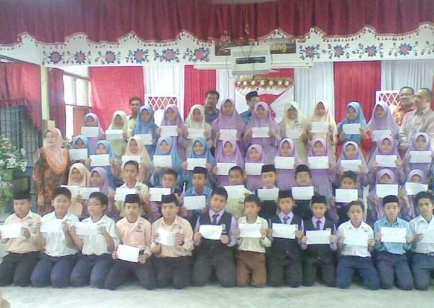

“Slow progress is better than no progress.”
So, here i would like to briefly story you about my whole study life starting from my childhood to my current study life.
 My primary school's name was Sekolah Kebangsaan Lemal. I got many cute friends from there. Thank God, I stil keep in contact with them till now. Uhh.. I miss my childhood so bad :'(
Now, let's move on to high school's memory of mine on 2012 until 2016. That was a great memorable journey. I graduated my school life there with beautiful memories and friends, too. They have went to different universities now. I seldom get to gather up with them back them. Unfortunately, i could not find any photos from my secondary school.
Yeay! This is my favourite part. My matriculation life.. I really love being studying here. Out of all my study journey, matriculation took the least time but put the biggest effect for me! I learned many things about life here. I found my true friend. You know what, i cried so hard on my last day finishing my matriculation life. Uhh, my eyes feel got blurry now. I miss all the memories in KMKT.. :'(
Finally, i reached my degree life after struggling in all of previous journey earlier. It was quite a tough things to do. Currently, i'm in my second year. One year left and i will be freedom, insyaAllah! :D
If you want to get more about any particular of my study life, below are the links i have attached in: